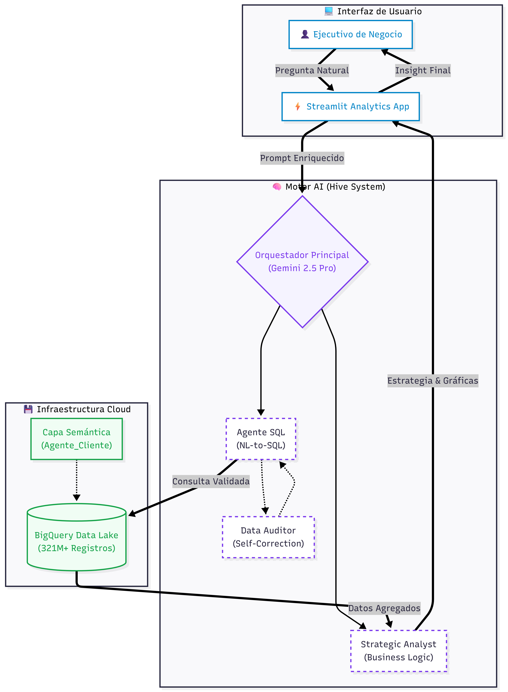
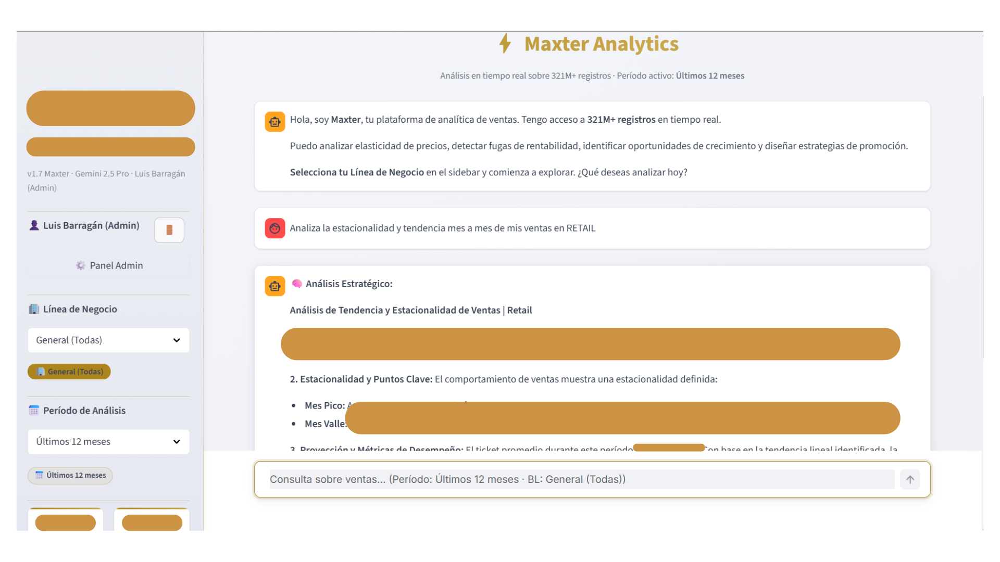
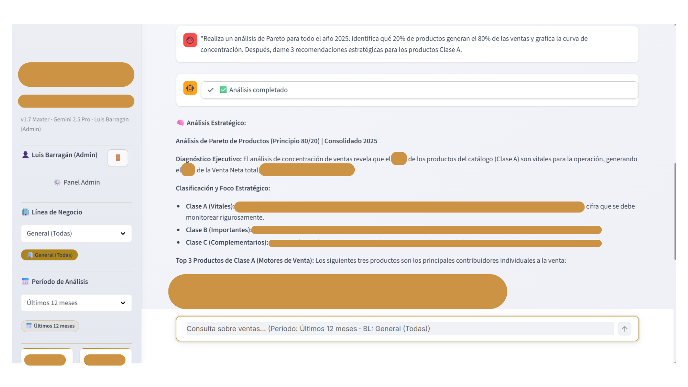

Empoderando la toma de decisiones ejecutivas en una Empresa Líder en Retail mediante Inteligencia Artificial y consulta directa de +321 Millones de registros.
Poder de Procesamiento
+321,000,000Registros analizados con 100% de paridad financiera SAP.
A diferencia de los chatbots convencionales, Maxter utiliza un sistema orquestado de agentes especializados basados en Gemini 2.5 Pro:

Flujo de trabajo multi-capa: Desde el lenguaje natural hasta la paridad de datos.
Maxter integra módulos de consultoría automatizados para obtener respuestas en segundos sobre periodos anuales completos:
Visualización avanzada integrada en Streamlit, ofreciendo una experiencia de usuario fluida y profesional.

Análisis de estacionalidad y comportamiento de tienda.

Clasificación de productos ABC y motores de venta.